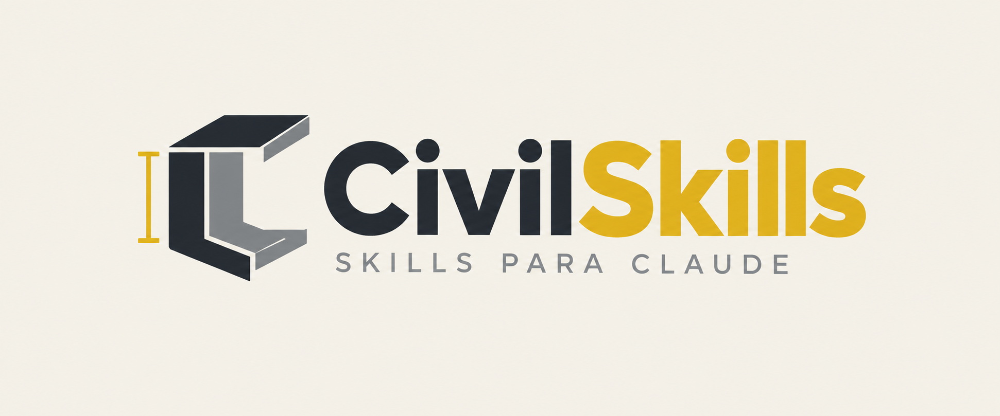
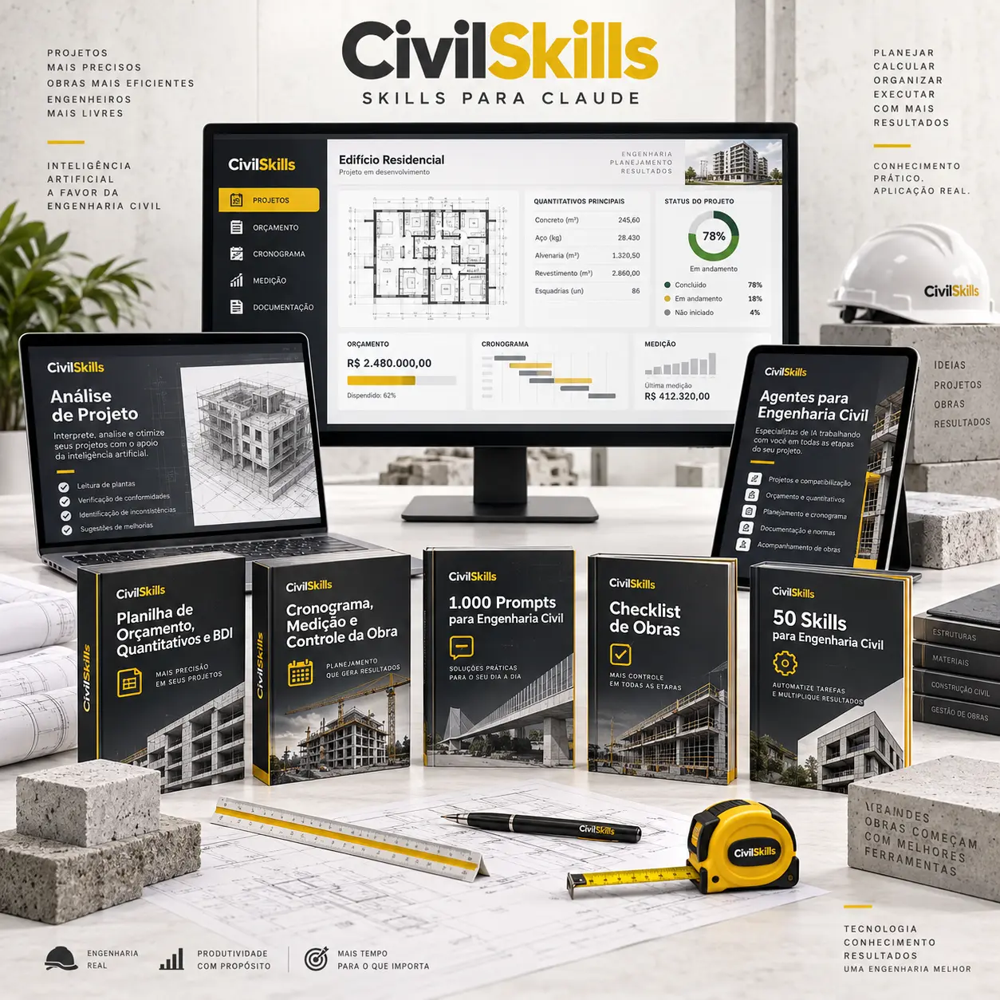
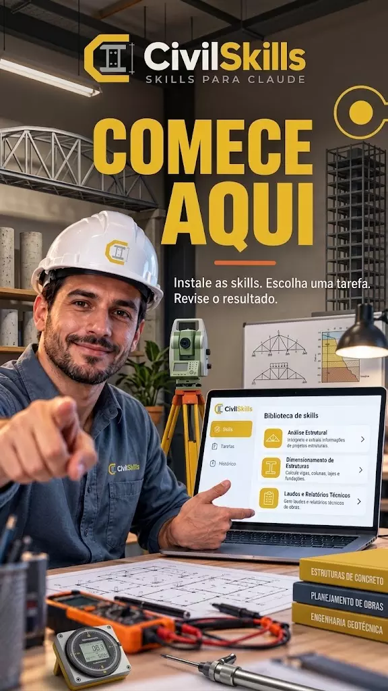

O CivilSkills é uma biblioteca com 50 skills técnicas e 1.000 comandos prontos para transformar o Claude em um assistente para projetos, levantamentos, orçamentos, execução, documentação e controle de obras.
Você fornece os dados do serviço. O Claude organiza a primeira versão. Você revisa, ajusta e mantém a decisão técnica.
Acesso digital imediato · Pagamento único · Garantia de 7 dias
A licença de uso do Claude é contratada à parte, diretamente com a Anthropic.

Boa parte do expediente de um escritório de engenharia civil não vai para o cálculo — vai para formatar planilha, revisar texto de memorial e responder mensagem de cliente e de obra.
E quando finalmente sobra um tempo para olhar o projeto com calma, o prazo já apertou.
Recorrer a uma IA sem contexto também não resolve sozinho: sem uma skill estruturada para o tipo de tarefa, informações importantes podem ficar de fora — e você acaba gastando tempo reorganizando o que deveria ter economizado.
Abra cada frente de trabalho abaixo para ver as skills incluídas no CivilSkills.
Do briefing à liberação para orçamento.
Define objetivos, entregáveis, restrições e limites do serviço.
Confere projetos, contratos, levantamentos e arquivos recebidos.
Extrai informações essenciais e organiza o entendimento inicial do projeto.
Transforma exigências técnicas e do cliente em itens verificáveis.
Cruza arquitetura, estrutura e instalações para localizar interferências.
Organiza quantidades por serviço, ambiente, etapa e unidade.
Define roteiro, registros, equipamentos e evidências para a visita.
Compara premissas, restrições, riscos e alternativas do empreendimento.
Identifica divergências, omissões e conflitos que exigem esclarecimento.
Verifica se os dados estão completos antes da etapa orçamentária.
Dos quantitativos ao plano de custo e prazo.
Decompõe o empreendimento em etapas, pacotes e atividades controláveis.
Organiza serviços, quantidades, custos e formação do preço final.
Estrutura materiais, mão de obra, equipamentos e produtividade.
Organiza a formação do BDI com premissas claramente apresentadas.
Prioriza os itens de maior impacto financeiro no orçamento.
Sequencia atividades, dependências, durações e marcos da execução.
Relaciona avanço da obra, desembolsos e faturamento ao longo do tempo.
Estima equipes, materiais e equipamentos necessários em cada etapa.
Programa aquisições, entregas, responsáveis e itens críticos.
Compara mudanças de preço, prazo, produtividade e escopo.
Da mobilização ao controle diário da execução.
Organiza sequência executiva, frentes de serviço e prioridades.
Padroniza registros de serviços, equipes, clima e ocorrências.
Compara o planejado com o realizado e destaca desvios.
Consolida quantidades, evidências, critérios de medição e valores.
Acompanha produção, horas trabalhadas, metas e perdas de rendimento.
Controla recebimento, consumo, perdas, saldo e reposições.
Organiza alocação, disponibilidade e utilização dos recursos.
Registra decisões, responsáveis, prazos e pendências.
Documenta origem, aprovação e impacto das mudanças.
Organiza ocorrências, evidências, causas e ações corretivas.
Do registro técnico à entrega documental.
Estrutura soluções, materiais e critérios executivos adotados.
Define materiais, execução, tolerâncias e critérios de aceitação.
Transforma cada serviço em uma sequência padronizada e verificável.
Consolida responsabilidades, exigências e condições de execução.
Relaciona imagens a locais, serviços, datas e observações.
Organiza constatações, evidências, riscos e recomendações.
Apresenta escopo, entregáveis, prazos, valores e condições.
Compara preços, prazos, escopos e condições dos fornecedores.
Registra alterações executadas e organiza a atualização dos projetos.
Reúne orientações de uso, conservação, garantias e manutenção.
Da inspeção ao recebimento final da obra.
Confere locação, escavação, armação, concretagem e registros.
Verifica formas, armações, cobrimento, concretagem e cura.
Confere alinhamento, prumo, juntas, revestimentos e acabamento.
Organiza testes e verificações das instalações e suas interfaces.
Confere preparação, aplicação, arremates e testes de estanqueidade.
Registra defeitos, localização, correção, responsável e reinspeção.
Classifica sintomas, evidências e possíveis causas para investigação.
Confere projetos, registros, contratos, medições e documentos.
Executa uma conferência multidisciplinar antes da liberação.
Consolida testes, pendências, documentos, responsáveis e aceite final.
As 50 skills completas e os 1.000 comandos fazem parte do CivilSkills.
Saber mais →Pagamento único · 7 dias de garantia
Exemplos de como as skills apoiam tarefas recorrentes de quem projeta, orça, executa e acompanha obras.
Enquanto as skills guiam as tarefas recorrentes, os comandos resolvem pedidos pontuais: um parecer, uma resposta a cliente, um resumo de reunião de obra.
E mais 990 comandos para comunicação, documentação, planejamento, acompanhamento e rotina de obras.
Saber mais →O CivilSkills traz conteúdos ilustrados para acompanhar a configuração desde o início.
Acesse sua conta e confira os requisitos indicados no guia de configuração.
Escolha a skill da tarefa e siga o passo a passo de configuração incluso.
Descreva a tarefa, informe os dados necessários e revise a resposta antes de usar.
Planilhas, agentes e um modelo de prompt para o seu dia a dia com o Claude.
Organiza os dados do serviço em uma planilha de apoio com quantitativos, custos e formação de preço para você conferir.
Organiza prazos, avanço físico-financeiro e medições da obra em um só arquivo.
Sequências prontas de análise, orçamento, planejamento e documentação para tarefas que se repetem toda semana.
Um modelo para organizar objetivo, contexto, dados de entrada e formato de saída sempre que for montar um pedido do zero.
Três materiais práticos para acompanhar a instalação das skills e aplicar o método no primeiro atendimento.

Como acessar o kit e organizar o ambiente antes da primeira tarefa.
Passo a passo de configuração de cada skill dentro do Claude.
Como escrever o pedido, dar contexto e revisar o que for gerado.
Deslize para conferir os outros materiais →
Comece pelo essencial ou já entre com o kit completo — pagamento único, sem mensalidade.
Para testar o método nas tarefas mais recorrentes do escritório.
pagamento único · acesso imediato · PIX ou cartão
Todas as skills, os comandos, os bônus e os conteúdos de apoio.
pagamento único · acesso imediato ao material completo · PIX ou cartão
A licença de uso do Claude é contratada à parte, diretamente com a Anthropic.
Acesse o pacote e teste as skills nas suas próprias tarefas. Se não fizer sentido para você, é só pedir o reembolso pelo canal informado na compra, dentro de 7 dias.
Quero testar o pacote →O kit estrutura instruções para apoiar o levantamento, a organização de dados e a preparação de documentos recorrentes da engenharia civil.
Você continua fornecendo os dados do serviço, indicando as referências normativas aplicáveis e revisando cada resposta antes de usar no projeto.
A análise técnica, os cálculos e a responsabilidade profissional continuam sendo do engenheiro habilitado.
O Simples (R$10) traz 15 skills essenciais e 200 comandos, para você testar o método. O Completo (R$27) inclui as 50 skills, os 1.000 comandos, os 4 materiais bônus e os 3 conteúdos de configuração.
Não. O guia de configuração explica o passo a passo, e cada skill já vem com o contexto necessário para orientar o Claude.
Acesso digital imediato às skills e à biblioteca de comandos e, no pacote Completo, também aos materiais bônus e aos conteúdos de configuração.
As skills são configuradas dentro do Claude, da Anthropic, seguindo o passo a passo incluído no pacote.
Não. A licença de uso do Claude é contratada separadamente, direto com a Anthropic.
Sim. O material foi pensado para engenheiros, técnicos, autônomos e escritórios de projeto, obra e gestão predial.
Sim, sempre. O resultado é um ponto de partida — a conferência técnica e a validação final continuam sendo suas.
Não. O kit organiza dados, estrutura documentos e prepara checklists — ele não substitui softwares técnicos, normas oficiais, cálculos profissionais nem o julgamento do engenheiro habilitado.
Após a confirmação do pagamento, você recebe o acesso e as instruções de configuração por e-mail.
Basta entrar em contato pelo canal informado na confirmação da compra, dentro do prazo de 7 dias.
Escolha o pacote ideal para sua rotina e leve o CivilSkills para o próximo projeto, orçamento, relatório ou acompanhamento de obra.
Quero começar — a partir de R$10 →Acesso digital imediato · Pagamento único · Garantia de 7 dias